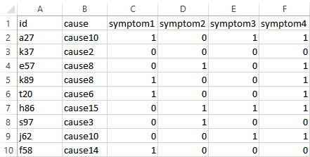
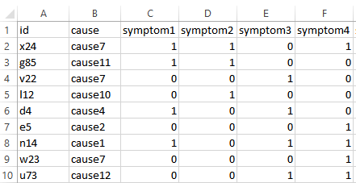

5 Data
This documentation page provides details on the training and testing data formats to be used as inputs in the nbc4va package.
5.1 Training and Testing Data
The training data (consisting of cases, causes of death for each case, and symptoms) is used as input for the Naive Bayes Classifier (NBC) algorithm to learn the probabilities for each cause of death to produce a NBC model.
This model can be evaluated for its performance by predicting on the testing data cases, where the predicted causes of death are compared to the causes of death in the testing data.
The process of learning the probabilities to produce the NBC model is known as training, and the process of evaluating the predictive performance of the trained model is known as testing.
Key points:
- The training data is used to build the NBC model
- The testing data is used to evaluate the NBC model’s predictive performance
- Ideally, the testing data should not have the same cases in the training data
- Both the training and testing data must have the same symptoms
5.2 Format of Data
The format of the training and testing data is structured as a table, where each column holds a variable and each row holds a death case.
The following format must be met in order to be used with the nbc4va package:
- Columns (in order): ID, Cause, Symptoms1..N
- ID: column of case identifiers formatted as text
- Cause: column of known causes of death formatted as text
- Symptoms1..N: N number of columns representing symptoms with each column containing 1 for presence of the symptom, 0 for absence of the symptom, any other values are treated as unknown
- If the testing causes are not known, the second column
Causecan be omitted - Unknown symptoms are imputed randomly from the distribution of known 1s and 0s; a symptom column will be removed from training and testing if 1s or 0s do not exist
- Both the training and testing data must be consistent with each other (same symptoms in order) to be meaningful
5.3 Examples of Data
The image below shows an example of the training data.

The image below shows an example of the corresponding testing data.

The image below shows an example of the corresponding testing data without any causes.

5.4 Symptom Imputation Example
Given a symptom column containing the values of each case (1, 0, 0, 1, 99, 99):
- 1 represents presence of the symptom
- 0 represents absence of the symptom
- 99 is treated as unknown as to whether the symptom is present or absent
The imputation is applied as follows:
- The unknown values (99, 99) are randomly imputed according to the known values (1, 0, 0, 1).
- The known values contain half (2/4) the values as 1s and half (2/4) the values as 0s.
- Thus, the imputation results in half (1/2) the unknown values as 1s and half (1/2) of the unknown values as 0s to match the known values distribution.
- The possible combinations for replacing the unknown values (99, 99) are then (1, 0) and (0, 1).
The symptom imputation method preserves the approximate distribution of the known values in an attempt to avoid dropping entire cases or symptoms.
5.5 Sample Code for Data
Run the following code using nbc4vaData() in the R console to view the example data included in the nbc4va package:
library(nbc4va) # load the nbc4va package
data(nbc4vaData) # load the example data
View(nbc4vaData) # view the sample data in the nbc4va package
data(nbc4vaDataRaw) # load the example data with unknown symptom values
View(nbc4vaDataRaw) # view the sample data with unknown symptom values